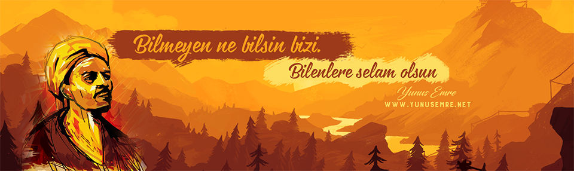
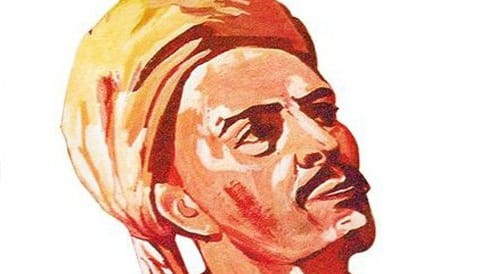
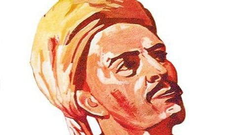

 

Yunus Emre
Yunus Emre, 1240 yılında Sarıköy’de doğmuştur. Şiirlerindeki bilgilerden evli ve çocuk sahibi olduğu, İsmail adında bir oğlunun bulunduğu anlaşılmaktadır.
Yunus Emre, resmî yazışma ve edebiyat dilinin Farsça olduğu, ilmî eserlerin Arapça yazıldığı bir dönemde yetişmiş bir geçiş dönemi şairidir.
Yunus Emre’nin tarihî şahsiyeti hakkında çok farklı görüş ileri sürülmüştür. Abdurrahim Şerif Beygu, Yunus Emre’nin ve Tapduk Emre’nin mezarının Erzurum’un Düzcü köyünde olduğunu, Yunus’un Yıldırım Beyazıt devrine eriştiğini söylemiştir.
Yunus Emre sözləri
Neyi çok bekler ve umursan senden uzaklaşır.
Az söz erin yüküdür, çok söz hayvan yüküdür.
Mazlumun ahı indirir şâhı.
Her şeyin bir vakti vardır.